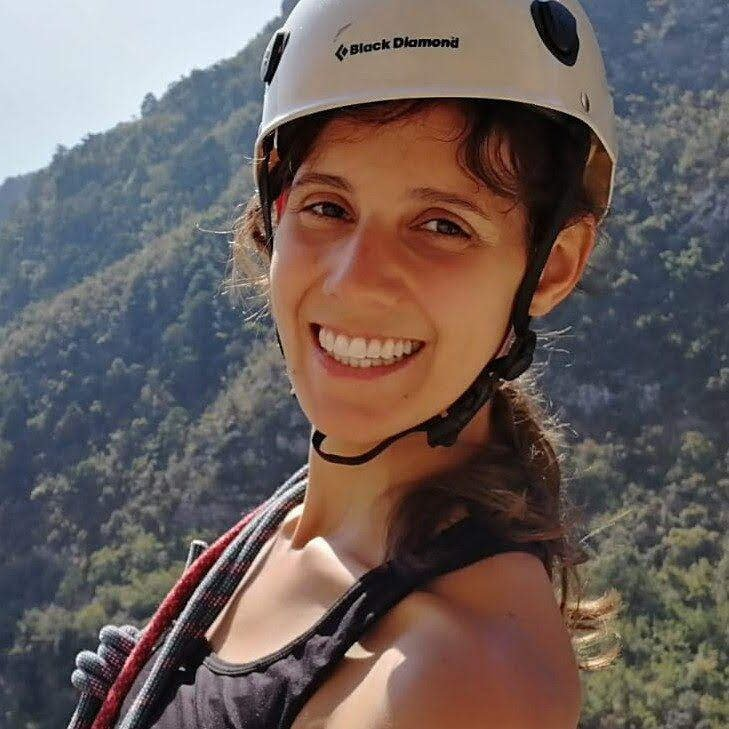
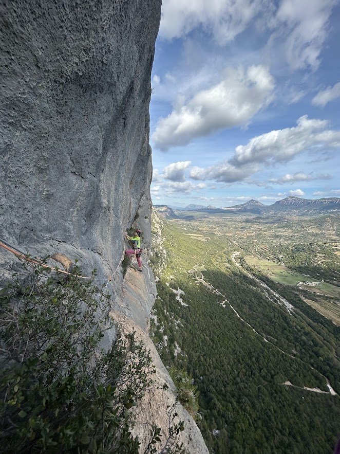
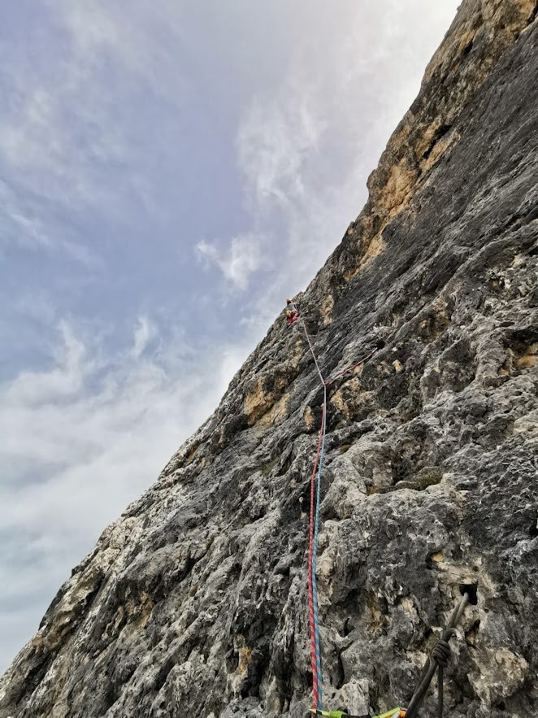
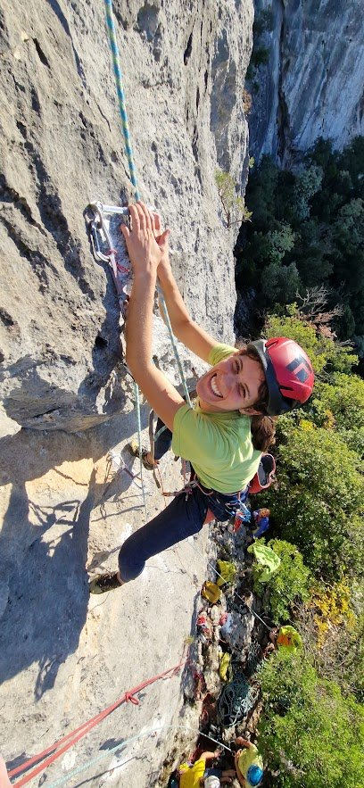
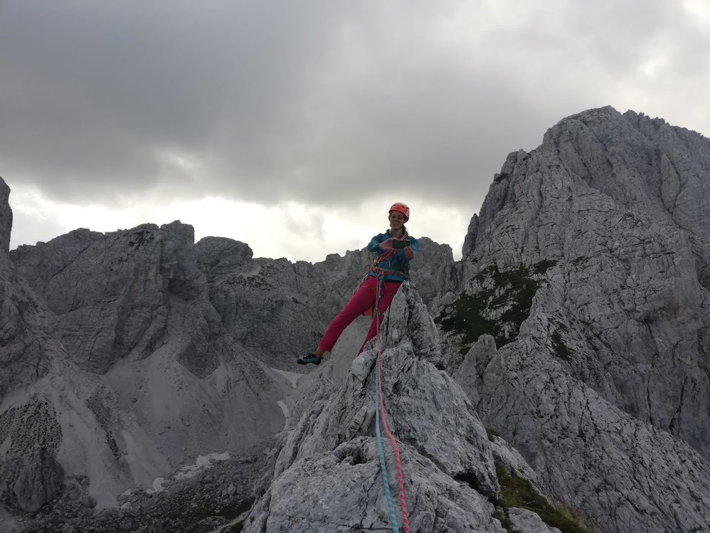

Tenure-Track Assistant Professor (RTT)
Francesca Cairoli
Department of Mathematics, Informatics and Geoscience
University of Trieste, Italy
My research focuses on the safety assurance of autonomous systems, strategically integrating the scalability of machine learning with the rigorous, verifiable guarantees of formal methods. I combine scientific machine learning and neuro-symbolic techniques to embed structured domain knowledge and safety constraints directly into the learning process — using deep generative models to reason about complex, stochastic systems and developing efficient, statistically grounded quantifications of uncertainty for safety-critical applications.
News
-
2026
Paper accepted at CDC 2026
"Certifiably Robust Reinforcement Learning under Spatio-Temporal Logic Specifications" accepted at the International Conference on Decision and Control (CDC).
-
2026
Paper accepted at CAESAR Workshop @ ECML-PKDD
"Localized Anomaly Detection via Differentiable D-vine Copulas" accepted at the CAESAR Workshop, ECML-PKDD 2026.
-
2026
Paper accepted at KR 2026
"Time Robustness for Point-Based Semantics of Metric Interval Temporal Logic" accepted at the International Conference on Principles of Knowledge Representation and Reasoning (KR).
-
2026
Paper accepted at AAMAS 2026
"Guiding Neuro-Symbolic Scenario Generation with Spatio-Temporal Logic" accepted at the International Conference on Autonomous Agents and Multiagent Systems (AAMAS).
-
Mar. 2026
Promoted to Tenure-Track Assistant Professor (RTT)
Dept. of Mathematics, Informatics and Geoscience, University of Trieste.
-
2025
Two papers accepted at RV 2025
"Conformal Predictive Monitoring for Multi-Modal Scenarios" and "CoCAI: Copula-based Conformal Anomaly Identification for Multivariate Time-Series."
Research Interests
The core of my approach leverages scientific machine learning and neuro-symbolic techniques to embed structured domain knowledge and safety constraints directly into the learning process. This principled integration is designed to significantly enhance model robustness, generalisation, and interpretability. Key directions involve employing deep generative models to analyse and reason about complex, stochastic systems, coupled with the development of efficient, statistically grounded quantifications of uncertainty. These methodological foundations are crucial for certifying reliable and trustworthy performance in safety-critical applications.
Academic Employment
-
From March 2026
Tenure-Track Assistant Professor (RTT)
S.S.D. INFO-01/A — Dept. of Mathematics, Informatics and Geoscience, University of Trieste
-
Mar. 2023 – Feb. 2026
Junior Assistant Professor (RTD-A)
S.S.D. INFO-01/A — Dept. of Mathematics, Informatics and Geoscience, University of Trieste
Project: EU PNRR iNEST — Spoke 9, Models, Methods, Computing Technologies for Digital Twin -
Mar. 2022 – Feb. 2023
Research Fellowship
Dept. of Mathematics and Geoscience, University of Trieste
Project: PRIN 2017 SEDUCE — Machine Learning for the Verification and Synthesis of Cyber-Physical Systems
Supervisor: Luca Bortolussi -
Jul. 2017 – Jul. 2018
Research Fellowship
Dept. of Engineering and Architecture, University of Trieste
Project: POR FESR 2014-2020 with Generation Byte — MDCLS: Dynamical Models for Multi-Device Closed-Loop System
Supervisor: Felice Andrea Pellegrino
Education
-
Nov. 2018 – Oct. 2022
PhD in Computer Science
“Earth Science, Fluid-Dynamics and Mathematics. Interactions and Methods”, University of Trieste
Thesis: Deep Learning for Abstraction, Control and Monitoring of Complex Cyber-Physical Systems
Supervisor: Luca Bortolussi -
Oct. 2014 – Mar. 2017
Master Degree in Mathematics
University of Trieste
Thesis: Non-linear whole-genome analysis of DNA methylation fidelity
Supervisor: Luca Bortolussi -
Sept. 2010 – Jul. 2013
Bachelor Degree in Mathematics
University of Milano-Bicocca
Thesis: Applicazioni computazionali delle basi di Groebner su equazioni polinomiali
Supervisor: Andrea Previtali
Research & Study Visits
- University of Southern California, CPS-Vida Lab, Los Angeles, USA — May–Aug. 2023
- University of Konstanz, Centre for the Advanced Study of Collective Behaviour, Germany — Feb.–Mar. 2022
- Royal Holloway University, London, UK — Jan.–Feb. 2020
- Saarland University, Dept. of Modeling and Simulation, Germany — Oct. 2016
- Graz University of Technology, Austria — Erasmus, Sept. 2012–Mar. 2013
Publications
- Cairoli, F.; Bortolussi, L. Certifiably Robust Reinforcement Learning under Spatio-Temporal Logic Specifications. International Conference on Decision and Control (CDC), 2026.
- Pearson, N. A.; Zanello, F.; Russo, D.; Bortolussi, L.; Cairoli, F. Localized Anomaly Detection via Differentiable D-vine Copulas. CAESAR Workshop @ ECML-PKDD, 2026.
- Silvetti, S.; Compagnucci, I.; Cairoli, F.; Trubiani, C.; Nenzi, L. Time Robustness for Point-Based Semantics of Metric Interval Temporal Logic. International Conference on Principles of Knowledge Representation and Reasoning (KR), 2026.
- Bonin, L.; Giacomarra, F.; Bortolussi, L.; Deshmukh, J.; Cairoli, F. Guiding Neuro-Symbolic Scenario Generation with Spatio-Temporal Logic. International Conference on Autonomous Agents and Multiagent Systems (AAMAS), 2026. DOI
- Cairoli, F.; Bortolussi, L. Scalable and reliable stochastic parametric verification with stochastic variational smoothed model checking. International Journal of Systems Science, 1–29, 2025. DOI
- Cairoli, F.; Kuipers, T.; Bortolussi, L.; Paoletti, N. Conformal quantitative predictive monitoring of stochastic systems with conditional validity. Nonlinear Analysis: Hybrid Systems, 57, 101606, 2025. DOI
- Pearson, N. A.; Zanello, F.; Russo, D.; Bortolussi, L.; Cairoli, F. CoCAI: Copula-based Conformal Anomaly Identification for Multivariate Time-Series. International Conference on Runtime Verification (RV), 2025. DOI
- Cairoli, F.; Bortolussi, L.; Deshmukh, J.; Lindemann, L.; Paoletti, N. Conformal Predictive Monitoring for Multi-Modal Scenarios. International Conference on Runtime Verification (RV), 2025. DOI
- Bortolussi, L.; Cairoli, F.; Klein, J.; Petrov, T. Neuro-Symbolic Discovery of Markov Population Processes. International Conference on Neuro-symbolic Systems (NeuS), PMLR, 2025. Link
- Giacomarra, F.; Hosseini, M.; Paoletti, N.; Cairoli, F. Certified Guidance for Planning with Deep Generative Models. International Conference on Autonomous Agents and Multiagent Systems (AAMAS), 2025. Link
- Randone, F.; Doz, R.; Cairoli, F.; Bortolussi, L. Towards a probabilistic programming approach to analyse collective adaptive systems. International Symposium on Leveraging Applications of Formal Methods (ISoLA), 2024. DOI
- Cairoli, F.; Anselmi, F.; d'Onofrio, A.; Bortolussi, L. Generative abstraction of Markov population processes. Theoretical Computer Science, 977, 114169, 2023. DOI
- Anselmi, F.; Manzoni, L.; D'onofrio, A.; Rodriguez, A.; Caravagna, G.; Bortolussi, L.; Cairoli, F. Data symmetries and learning in fully connected neural networks. IEEE Access, 11, 47282–47290, 2023. DOI
- Cairoli, F.; Bortolussi, L.; Paoletti, N. Learning-Based Approaches to Predictive Monitoring with Conformal Statistical Guarantees. International Conference on Runtime Verification (RV), 2023. DOI
- Bortolussi, L.; Cairoli, F.; Carbone, G.; Pulcini, P. Scalable Stochastic Parametric Verification with Stochastic Variational Smoothed Model Checking. International Conference on Runtime Verification (RV), 2023. DOI
- Bortolussi, L.; Cairoli, F.; Giacomarra, F.; Scassola, D. Model Abstraction and Conditional Sampling with Score-Based Diffusion Models. International Conference on Quantitative Evaluation of Systems (QEST), 2023. DOI
- Bortolussi, L.; Cairoli, F.; Klein, J.; Petrov, T. Data-Driven Inference of Chemical Reaction Networks via Graph-Based Variational Autoencoders. International Conference on Quantitative Evaluation of Systems (QEST), 2023. DOI
- Cairoli, F.; Paoletti, N.; Bortolussi, L. Conformal Quantitative Predictive Monitoring of STL Requirements for Stochastic Processes. 26th ACM International Conference on Hybrid Systems: Computation and Control (HSCC), 2023. DOI
- Ballarin, E.; Bortolussi, L.; Cairoli, F.; Gallese, C.; Nenzi, L.; Saveri, G. Reliable and Explainable AI in Trieste. Ital-IA, 394–396, 2023. PDF
- Cairoli, F.; Paoletti, N.; Bortolussi, L. Neural predictive monitoring for collective adaptive systems. International Symposium on Leveraging Applications of Formal Methods (ISoLA), 30–46, 2022. DOI
- Bortolussi, L.; Cairoli, F.; Paoletti, N.; Smolka, S. A.; Stoller, S. D. Neural predictive monitoring and a comparison of frequentist and Bayesian approaches. International Journal on Software Tools for Technology Transfer, 1–26, 2021. DOI
- Cairoli, F.; Bortolussi, L.; Paoletti, N. Neural predictive monitoring under partial observability. International Conference on Runtime Verification (RV), 121–141, 2021. DOI
- Cairoli, F.; Carbone, G.; Bortolussi, L. Abstraction of Markov Population Dynamics via Generative Adversarial Nets. International Conference on Computational Methods in Systems Biology (CMSB), 19–35, 2021. DOI
- Bortolussi, L.; Cairoli, F.; Carbone, G.; Franchina, F.; Regolin, E. Adversarial Learning of Robust and Safe Controllers for Cyber-Physical Systems. IFAC-PapersOnLine 54(5), 223–228, 2021. DOI
- Cairoli, F.; Fenu, G.; Pellegrino, F. A.; Salvato, E. Model Predictive Control of Glucose Concentration Based on Signal Temporal Logic Specifications with Unknown-Meals Occurrence. Cybernetics and Systems, 51(4), 426–441, 2020. DOI
- Bortolussi, L.; Cairoli, F.; Paoletti, N.; Smolka, S. A.; Stoller, S. D. Bayesian Neural Predictive Monitoring. 2nd Workshop on AI and Formal Verification, Logics, Automata and Synthesis (OVERLAY), 95–100, 2020. PDF
- Bortolussi, L.; Cairoli, F. Bayesian abstraction of Markov population models. International Conference on Quantitative Evaluation of Systems (QEST), 259–276, 2019. DOI
- Cairoli, F.; Fenu, G.; Pellegrino, F. A. Clinical Decision Support Using Colored Petri Nets: a Case Study on Cancer Infusion Therapy. 6th International Conference on Control, Decision and Information Technologies (CoDIT), 314–319, 2019. DOI
- Cairoli, F.; Fenu, G.; Pellegrino, F. A.; Salvato, E. Model predictive control of glucose concentration based on signal temporal logic specifications. 6th International Conference on Control, Decision and Information Technologies (CoDIT), 714–719, 2019. DOI
- Bortolussi, L.; Cairoli, F.; Paoletti, N.; Smolka, S. A.; Stoller, S. D. Neural predictive monitoring. International Conference on Runtime Verification (RV), 129–147, 2019. DOI
- Bortolussi, L.; Cairoli, F.; Paoletti, N.; Stoller, S. D. Conformal predictions for hybrid system state classification. From Reactive Systems to Cyber-Physical Systems, 225–241, 2019. DOI
Full and up-to-date list on Google Scholar.
Teaching
- Computer Science — Degree in Medicine and Surgery, 2026/27
- Data-Driven System Engineering — MSc in Computer Engineering, 2026/27
- Scientific Machine Learning and Simulation Intelligence — MSc in Data Science and AI, 2026/27
- Explainable, Causal and Neuro-Symbolic Artificial Intelligence — MSc in Data Science and AI, 2026/27
- Explainable and Neuro-Symbolic Artificial Intelligence — MSc in Data Science and AI, 2025/26
- Symbolic and Neuro-Symbolic Artificial Intelligence — MSc in Data Science and AI / Scientific and Data Intensive Computing, 2024/25
- Simulation Intelligence and Learning for Autonomous Systems — MSc in Data Science and AI / Scientific and Data Intensive Computing, 2023/24–2025/26
- Computer Programming (preparatory course) — MSc in Data Science and AI / Scientific and Data Intensive Computing, 2023/24–2025/26
- Stochastic Modeling and Simulation (Teaching Assistant) — MSc in Data Science and Scientific Computing, 2018/19–2021/22
Grants
- iNEST Young Researchers grant (Mar. 2024 – Oct. 2025) for “Reactive Scenario Generation for Testing Resilience of Autonomous Systems (RESGEN)”. Role: Principal Investigator.
Research Projects
- iNEST — Interconnected Nord-Est Innovation Ecosystem, EU NextGenerationEU / PNRR, Spoke 9. Collaboration: Univ. Padova, Univ. Trieste, OGS, SISSA. Role: Research Topic Co-Coordinator.
- SEDUCE — Designing Spatially Distributed Cyber-Physical Systems under Uncertainty, PRIN 2017. Collaboration: IMT Lucca, GSSI L'Aquila, Univ. Trieste, Univ. Camerino/Firenze.
- MDCLS — Multi Device Closed Loop System, POR FESR 2014-2020. Collaboration: Generation Byte Srl, Glance Vision Tech Srl, Univ. Trieste.
Academic Supervision
Postdoctoral Fellow
- Francesca Randone — Probabilistic programs as stochastic surrogates (RESGEN project)
PhD Students
- Current Nicholas Pearson (ADSAI PhD, UniTS): Time series analysis applied to the urban water cycle
- Current Alessandro Della Siega (ADSAI PhD, UniTS) (Co-supervision): Discovery of Stochastic Differential Equations
- Former Francesco Giacomarra (ADSAI PhD, UniTS) (Co-supervision): Certification of Deep Generative Models
- Former Julia Klein (Konstanz University) (Co-supervision): Data-Driven Inference of Chemical Reaction Networks
Student Supervision (BSc/MSc)
- Alessandro Della Siega — Identification of stochastic processes (MSc, DSAI)
- Annalisa Paladino — Gradient-based optimisation of spatio-temporal logical objectives (Internship & MSc, DSAI)
- Mattia Simonutti — Conformal Inference as a Regularisation Term in Regression Models (BSc, 2024)
- Matteo Munini — Theoretical modeling of emergency events: Social Forces in Extreme Conditions (MSc, 2025)
- Davide Bartole — Model abstraction using Temporal Difference VAEs (MSc, 2022)
- Gaia Saveri — Graph Neural Networks for Propositional Model Counting (MSc, 2021)
- Matteo Boi — Adversarial Learning on Model of Artificial Pancreas (BSc, 2021)
- Francesco Franchina — Adversarial Learning of Robust and Safe Controllers for CPS (MSc, 2020)
- Laura Falciani — Bayesian Abstraction for Chemical Reaction Networks (MSc, 2019)
Beyond the Lab
Outside the lab, I'm happiest in the mountains — climbing, hiking, and chasing new adventures.




Contact
Department of Mathematics, Informatics and Geoscience — University of Trieste, Italy
Via Giovanni e Demetrio Economo, 12/3 — Room 415